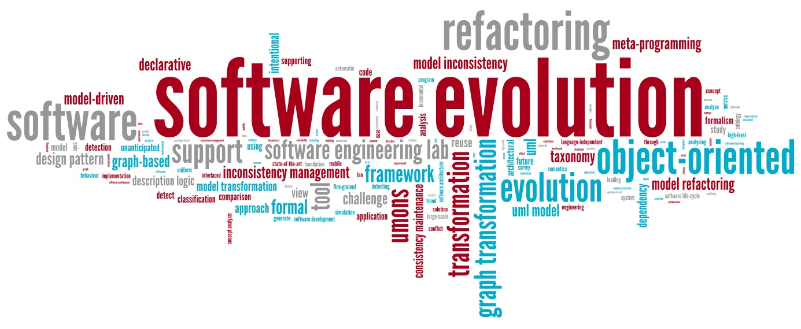

SOS - Evol 2013
|
 |
SOS - Evol 2013 : Seminar on Open Source Evolution
Jesus Gonzalez-Barahona
[online presentation slides]
[blog post]
Jesus M. Gonzalez-Barahona teaches and researches in Universidad Rey Juan Carlos, Mostoles (Spain). His research interests include the study of communities of software development, with a focus on quantitative and empirical studies, and distributed tools for collaboration in libre (free, open source) software projects. In these areas, he has published several papers, and is participating in several international research projects. He started to be involved in libre software in 1991. Since then, he has participated in several working groups, has developed some research lines, and has started training programs on the matter. He also collaborates with several libre software projects and associations, writes in several media about topics related to libre software, and consults for companies and public administrations on issues related to their strategy on these topics, in the framework of the GSyC/LibreSoft research group. From a more educational perspective, he is one of the promoters of the idea of an European master program on libre software, and has specific interest in the education in that area.
Demographics of Linux kernel developers: how old are they?
Abstract of talk. The Linux kernel git repository hosts several years of activity. We have analyzed it with the aim to learn about the "age" structure of the community of developers, and how it has evolved over time. After looking at the commit activity by each of them, periods of stay and leave have been determined, and later used to draw demographics pyramids, with time of stay in the project as "age". The analysis of such pyramids and related parameters help to better understand the experience of the community of developers, how new people is entering the project, and some bounds on the future evolution. We propose this analysis on the Linux kernel as a case study of a methodology that could be used to study many other development communities.
 |
 |
 |
 |